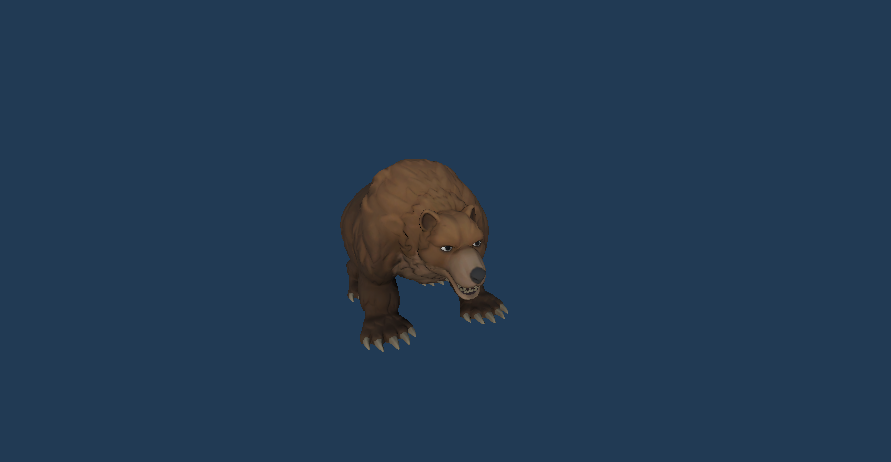

Bear
The Bear is a formidable adversary encountered in Fortress Guardian, known for its strength and imposing presence on the battlefield. It is the second enemy to ever appear in the game, making its debut in wave 2 of the training grounds.
Characteristics
With its sturdy frame and powerful attacks, the Bear stands out as a significant threat among the game's roster of enemies. It boasts a considerable health pool of 32 hit points, capable of enduring substantial punishment before succumbing to defeat. Each strike from the Bear inflicts 1 point of damage upon its target, making it a relentless force to be reckoned with. Despite its formidable offensive capabilities, the Bear exhibits a moderate speed rating of 2.7, allowing it to traverse the battlefield with purpose but without overwhelming swiftness. Its attack speed averages at 1.3 strikes per second, ensuring a steady stream of damage against any defenses it encounters.
Gameplay
As the second enemy encountered within Fortress Guardian, the Bear presents players with an escalated challenge compared to its predecessor, the Red Goblin. Its appearance in wave 2 of the training grounds serves as a significant milestone in the player's progression, signaling the transition to increasingly formidable adversaries. Players must adapt their strategies to contend with the Bear's strength and endurance, employing a combination of defensive structures and offensive tactics to overcome this imposing foe. The Bear's presence introduces players to the concept of diversifying their defensive capabilities and coordinating their efforts to withstand more substantial assaults. Despite its increased potency, the Bear remains a manageable threat for seasoned players, providing an opportunity to further refine their skills before confronting even more formidable adversaries in later waves.
Development History
During the early stages of Fortress Guardian's development, the Bear underwent rigorous iteration to ensure its balance and effectiveness within the game's ecosystem. Its role as the second enemy to appear was carefully crafted to provide players with a gradually escalating challenge, setting the stage for the trials that await in later stages of the game.
Legacy
The Bear's design underwent refinement to strike a balance between its imposing presence on the battlefield and its susceptibility to player strategies and tactics. Through meticulous adjustments to its statistics and behavior, the Bear emerged as a memorable and formidable adversary, contributing to the rich tapestry of challenges within Fortress Guardian.
bear as seen directly in unity engine
Stats
- HEALTH: 32
- Damage: 1
- Speed: 2.7
- Coins per kill: 60
- Attack Speed: 1.3/s
- First appear wave: 2